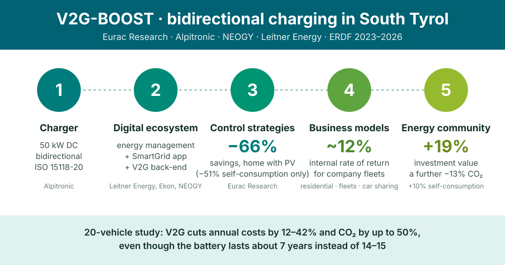

Project results · V2G-BOOST, 2023–2026
Bidirectional charging in practice: results of the V2G-BOOST project in South Tyrol
A private car spends most of its life parked. If it is electric, it carries a battery of tens of kilowatt-hours that could support the grid while it waits. In V2G-BOOST, a three-year project in South Tyrol that I coordinated, we worked on everything needed to make that happen: the charger, the software, the control logic, the business case and the impact on energy communities and the region.

What is bidirectional charging?
Today almost everyone uses uncontrolled charging: the car starts charging at full power as soon as it is plugged in, whatever the price of electricity or the amount of solar and wind on the grid. If everyone plugs in when they get home in the evening, the load lands right when the grid is already busy and the sun has gone down.
Smart charging moves the charging to better hours, for example midday when solar panels produce most, while making sure the battery is full when the driver needs it. It only needs communication and control, so it is close to market.
Bidirectional charging, or vehicle-to-grid (V2G), goes a step further: the car can also give energy back to the grid or to the home, like a stationary battery. That needs bidirectional chargers, cars with the function enabled, dedicated communication standards and market rules that pay for the service. The International Energy Agency still considers V2G pre-commercial.
The V2G-BOOST project
V2G-BOOST was funded by the European Regional Development Fund (ERDF) and ran for 36 months, until September 2026. Eurac Research coordinated it with three South Tyrolean companies, Alpitronic, NEOGY and Leitner Energy. The aim was to develop and test the technology locally and find out where V2G really pays off.
It ran in parallel with the IOMSES project, which looked at the same question for the whole Italian power system up to 2050.
Results across the value chain
The charger
Alpitronic developed and tested a 50 kW bidirectional DC charger compliant with the ISO 15118-20 standard. It passed laboratory tests and responds correctly to commands from an external energy management system.
The digital ecosystem
Leitner Energy, with its technology partner Ekon, built an energy management system and the "Leitner Energy SmartGrid" app, which coordinate solar panels, home storage and car charging. NEOGY developed a back-end platform that recognises and records V2G sessions.
The control strategies
At Eurac we developed four energy management strategies. In a home with solar panels, maximising self-consumption saved 51% on energy costs. Using V2G also to buy electricity when it is cheap and sell it when it is expensive raised the saving to 66%.
The business models
We developed three business models: residential, company fleets and car sharing. Fleets are the most promising segment in the short term because their vehicles are used more predictably. Even without dedicated tariffs, a scenario in which flexibility comes only from electric vehicles reaches an internal rate of return of about 12%.
Energy communities and the region
In a renewable energy community, V2G raises self-consumption by up to 10%, raises the value of the investment by 19% and cuts emissions by a further 13%. A regional model also assessed how V2G could contribute to the targets of South Tyrol's Klimaplan.
Is V2G worth it for drivers and the environment?
Every extra cycle wears the battery, which then has to be replaced earlier, and making a battery has a significant environmental footprint and uses critical raw materials. To check whether V2G still pays off, a study shared between V2G-BOOST and IOMSES simulated one year of 20 electric cars representative of the Italian fleet, with real electricity prices, and counted battery wear and its environmental impact over the whole life cycle.
| Compared with uncontrolled charging | Smart charging | V2G |
|---|---|---|
| Average battery life | about 14–15 years | about 7 years |
| Total annual costs | −5% to −25% | −12% to −42% |
| CO2 emissions | −15% to −35% | up to −50% |
V2G pays off even with a battery that lasts half as long. But not all of the 15 environmental indicators improve. With V2G, land use gets worse because cars charge in the hours of peak solar production, and so does the use of mineral resources, because batteries are replaced more often. Cost and CO2 alone are not enough to judge V2G.
What held V2G back
Very few cars on the market have the V2G function actually enabled. The OCPP 2.1 protocol, needed to manage bidirectional charging remotely, is still rare among software providers. And in Italy end users do not see dynamic electricity prices, so they have no reason to shift charging or to sell energy back. These limits come from the maturity of the market and the rules, not from the technology the project developed.
What comes next
Together with IOMSES, the project tells a consistent story. Smart charging is the low-risk first step: it is cheap, it benefits both the system and drivers, and it does not wear the battery. V2G adds value, reduces the need for stationary storage and helps integrate more renewables, but it pays off where its flexibility is worth more than its cost and the battery wear it causes. At national scale, our PyPSA model of Italy found that V2G cuts the cost of a net-zero power system in 2050 by 3.3%.
The next step is pilot projects with company fleets and car sharing in South Tyrol, a region with a high share of renewables and widespread smart meters. Above all, V2G needs a regulatory and tariff framework that pays for flexibility. In my view that will do more to make it take off than any one-off incentive.
Frequently asked questions
What is bidirectional charging?
Bidirectional charging lets an electric car both take electricity from the grid and send it back, to the grid (vehicle-to-grid, V2G) or to a home. It needs a bidirectional charger, a car that supports the function, communication standards such as ISO 15118-20 and market rules that pay for the service.
Does vehicle-to-grid damage the car battery?
V2G adds charging cycles, so the battery wears faster. In our simulation of 20 electric cars, the battery lasted on average about 7 years with V2G instead of 14 to 15 years. Even counting the earlier replacement, annual costs were 12 to 42% lower than with uncontrolled charging.
Where does vehicle-to-grid pay off first?
In the V2G-BOOST project, company fleets were the most promising segment in the short term, because their vehicles are used more predictably. A scenario where flexibility comes only from electric vehicles reached an internal rate of return of about 12%, even without dedicated tariffs.